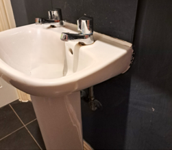
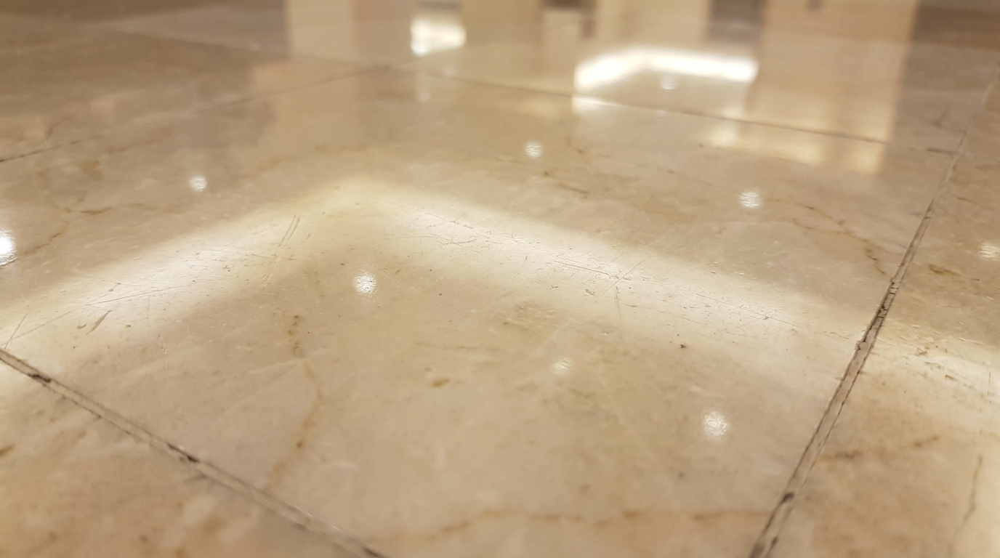
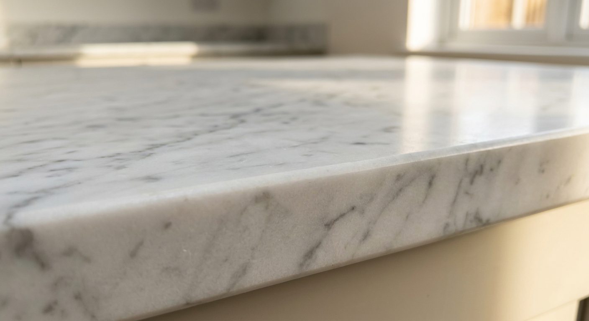
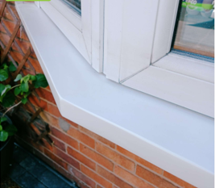
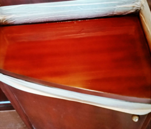

A decision in a day.
A Magicman quality guarantee.

Surface: Vitreous china basin
Issue: Impact crack with material loss
Resolved in: 4 days

Surface: Marble floor tile
Issue: Surface scratches
Resolved in: 3 days

Surface: Marble worktop
Issue: Chip to edge
Resolved in: 2 days
Surface: Timber surface
Issue: Scorch mark
Resolved in: 4 days

Surface: uPVC window frame
Issue: Surface scratch and scuff
Resolved in: 3 days

Surface: Laminate cabinet
Issue: Chip and edge peel
Resolved in: 2 days
Thirty years of surface repair expertise.
Expert surface repair since 1993
Over thirty years of craft knowledge built into every assessment and every repair.
Magicman Academy trained
Every technician trained and assessed to the Magicman standard before they work on your sites.
National coverage across the UK
Directly employed technicians covering every region. Wherever your sites are, we are there.
Quality guaranteed on every repair
Every job closed with a Magicman guarantee. If it is not right, we make it right.
Every claim. Every surface. Every time.

Click anywhere to play
The craft has never changed. Everything around it just got smarter.
Ready to make problems disappear?
Name: Tony Kinch
Phone: 07747 488283
Email: Tony.kinch@nhcc.uk.com